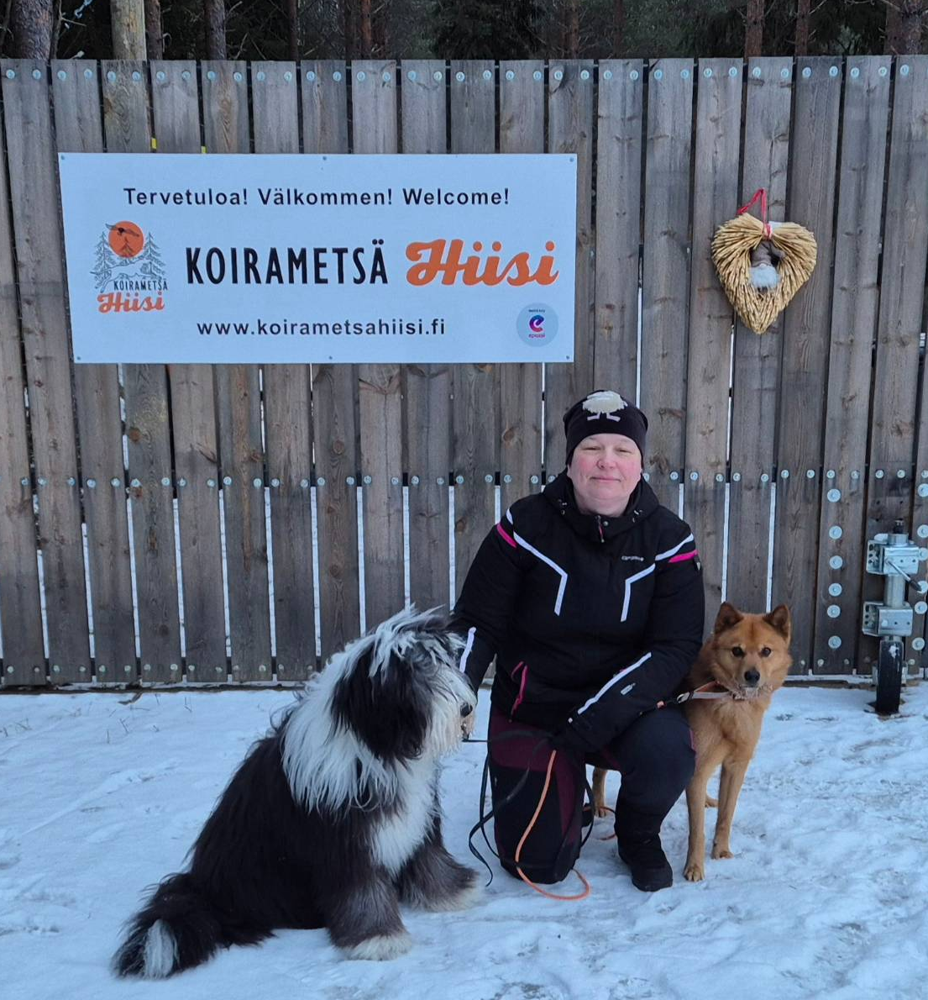
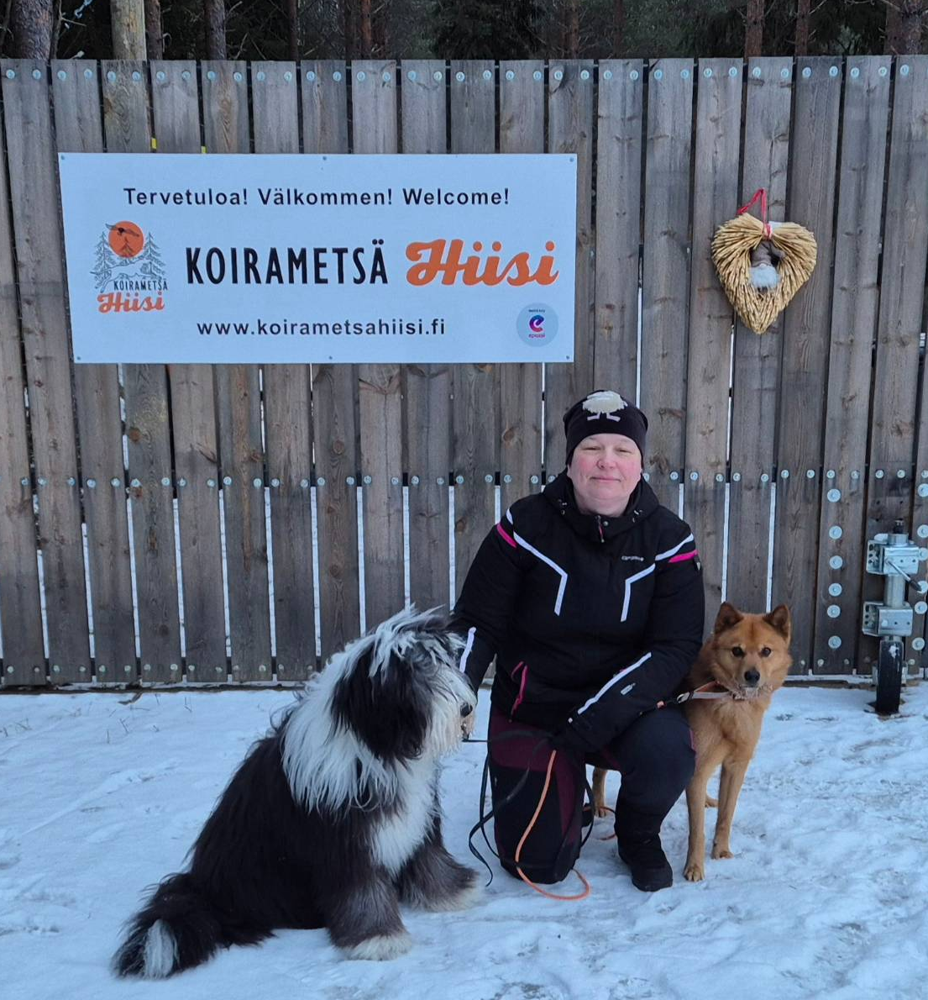

Missio
Vuodesta 2013 on sydämenasiani ollut huolehtia koirien lihashuollosta ja kuntoutuksesta. Riippumatta siitä,
onko koirasi kova harrastaja, kotisohvan symppis, seniori, tai vaikka leikkauksesta toipuja, tarvitsee
se juuri itselleen sopivaa lihashuoltoa ja hyvän toimintasuunnitelman myös jatkoa varten.
Itse uskon monipuoliseen liikuntaan, sopivaan ruokavalioon, sekä lihasten hoitamiseen jumppaamalla ja
venyttelemällä. Näillä eväillä pääsee jo pitkälle! Oma osuutensa on myös säännöllisellä hieronnalla,
sillä silloin pystymme auttamaan koiraa mahdollisimman varhaisessa vaiheessa kireyksien, virheasentoisuuksien,
mahdollisten vammojen tai rodun aiheuttamien erikoishaasteiden kanssa.
Hinnat
Hieronta on 43 euroa/koira/n.1h. Ensimmäiselle kerralle varataan reippaammin aikaa.
Jos alkututkimus ei johda hierontaan, hinta on 25 euroa.
Kotikäynteihin tulee matkakorvausta 5 euroa 20 km asti, sen jälkeen aina 5 euroa/10 km lisää. Kilometrit
mitataan Oulun Koskelasta tai Iin Jakkukylästä ja lyhyempi matka veloitetaan.
Maikkulan Muskettikoiraan ei tule kilometrikorvausta!
Pari ohjetta hierontaa varten
Ruoasta kannattaa pitää 2-3 h taukoa ennen ja jälkeen hieronnan. Koiran tulisi käydä tarpeillaan ennen
hierontaa, näin varmistetaan mahdollisimman mukava olo hieronnan aikana. Ja jos on esimerkiksi eläinlääkärin
lausuntoja, jotka vaikuttavat hierontaan, kannattaa ne ottaa mukaan.
Yleensä ensimmäiselle kerralle varaan aikaa reippaan tunnin, koska aluksi katsotaan pihalla askeleet ja
suoritetaan alkututkimus ennen hierontaa. Samalla käydään myös koiran historia läpi ja katsotaan mahdolliset
erikoistarpeet.
Maksutapoina käy käteinen, pankkikortti ja MobilePay.
Yrittäjä
Olen Sotkasiiran Merja, hieronut koiria vuodesta 2012 lähtien. Olen diplomi Urheilukoirahieroja, sekä
aiemmalta koulutukseltani kennelyrittäjä, sekä maaseutuyrittäjä. Työkokemusta eläinten parista on
eläinlääkärin avustajana, eläintarvikeliikkeen myyjänä ja myös tuotantoeläinten puolelta
maatalouslomittajana.
Opiskelen myös Oulun Ammattikorkeakoulussa Ohjelmistokehitystä, sekä teen sesongit tuntitöitä.
Tästä johtuen saattaa välillä olla vähän kiirettä, eikä aikoja löydy ihan viimetipassa. Muistathan siis
varata ajat hyvissä ajoin ennen tärkeitä tapahtumia!

 
